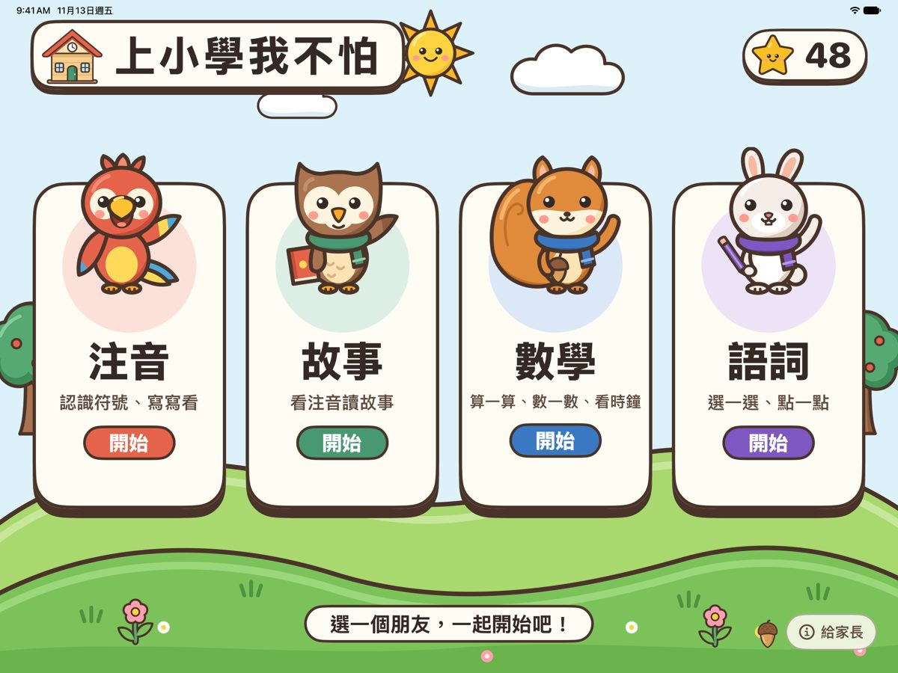
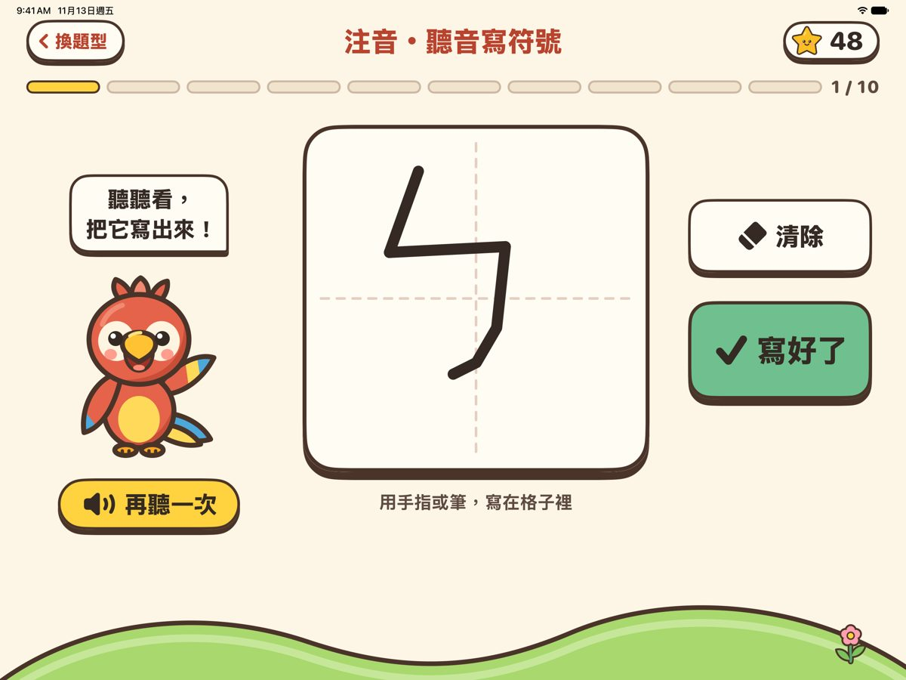

「上小學我不怕」是給準備上小學、和剛上一年級的孩子用的學習 App，適用 iPad 與 iPhone（橫向）。四位動物朋友帶孩子練注音、讀注音故事、認識語詞、算數學和看時鐘。
故事
- 8 篇有注音的短故事，國字旁邊都標好注音。
- 可以一句一句念給孩子聽、點一個字聽它的讀音；字可以調大。
數學
- 加法和減法：10 以內或 18 以內（個位數相加減，含進位、退位），可以開圓點提示。
- 數一數、比大小、排第幾個、看時鐘、時鐘走一圈。
- 認識時鐘：按「長針走一圈」看長針和短針怎麼走，可以切換整點和半點。

語詞
- 你我他、量詞、選字詞、標點、部首、語詞填空，共 6 組 122 題。
- 題目都有注音，做完一題會把完整句子念一遍。
畫面




讓家長放心
- 完全離線：不需要網路，所有功能都在裝置上執行。
- 不需要帳號，不收集任何資料。
- 沒有廣告，沒有內購。
- 學習進度只存在裝置上。詳見隱私權政策。